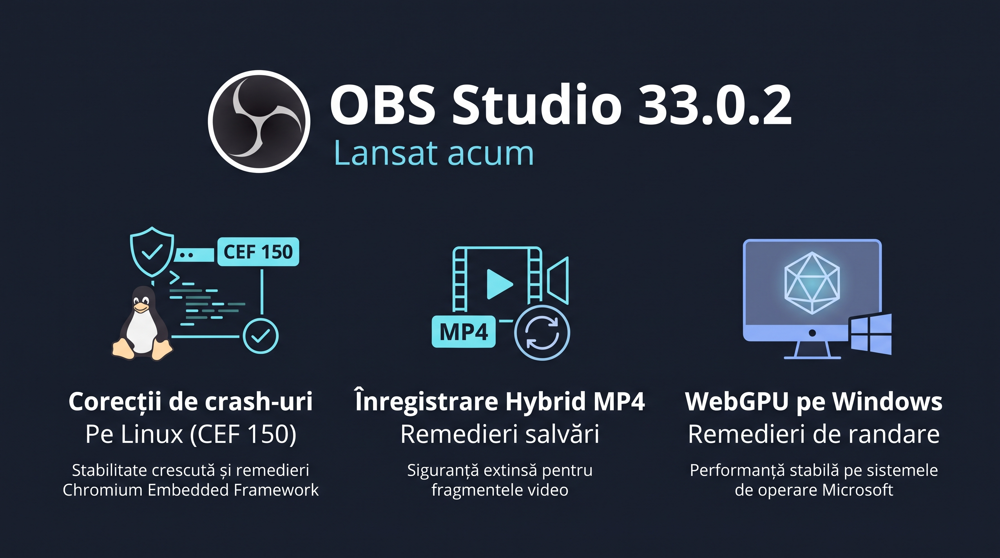

OBS Studio 33.0.2 a fost lansat: Corecții de crash-uri pe Linux (CEF 150), remedieri pentru înregistrarea Hybrid MP4 și WebGPU pe Windows

OBS Studio a primit versiunea de mentenanță 33.0.2, a doua actualizare din seria 33.0 a popularei aplicații open-source pentru înregistrare video și streaming live. Actualizarea rezolvă erori critice de stabilitate, îmbunătățește fiabilitatea surselor de tip browser (browser sources) și corectează problemele de înregistrare și sunet pe Linux, Windows și macOS.
1. Surse Browser (CEF 150) și îmbunătățiri specifice platformelor
Actualizarea vine în contextul trecerii majore la Chromium Embedded Framework (CEF) 150 (de la versiunea 127) realizate în OBS Studio 33.0:
Linux: Remediază un crash legat de alocarea memoriei în sursele de tip browser.
Windows: Activează suportul WebGPU pentru sursele browser (permițând rularea conținutului web care folosește acest API grafic modern în cadrul OBS) și rezolvă un crash legat de browser la pornirea aplicației.
macOS: Corectează funcția Screen Capture pe Mac-urile cu procesoare Intel, elimină un crash cauzat de solicitările de acces Bluetooth din sursele browser și împiedică apariția neașteptată a procesului OBS Helper în macOS Dock.
Windows și macOS: Controlerele de jocuri continuă să funcționeze atunci când fereastra OBS pierde focusul, iar potențialele crash-uri generate de solicitările de tip passkey în sursele browser au fost eliminate.
2. Înregistrare Hybrid MP4, sunet DeckLink și integrare YouTube
Împărțirea automată a fișierelor Hybrid MP4: S-a remediat o eroare prin care înregistrările în format Hybrid MP4 nu erau împărțite conform intervalelor de timp configurate (funcție esențială pentru sesiunile lungi de înregistrare).
Sunet DeckLink: Au fost eliminate întreruperile frecvente ale sunetului (audio dropouts) la utilizarea hardware-ului de ieșire DeckLink.
Integrare YouTube: S-a corectat o problemă prin care setării AutoStop îi era atribuită incorect valoarea setării AutoStart.
3. Stabilitate generală și remedieri de interfață
Camera virtuală și ferestre de dialog: Au fost rezolvate crash-urile care puteau apărea la inițializarea și oprirea camerei virtuale (virtual camera), problemele legate de vertex buffers, precum și închiderea forțată a aplicației atunci când OBS este închis în timp ce un dialog nativ de dispozitiv sau un dialog secundar (precum selectorul de fonturi) rămâne deschis.
Alte corecții: Grupurile de surse duplicate nu își mai pierd numele, intrările repetate din jurnal (log) sunt trunchiate corect și a fost eliminat un crash la clic dreapta pe anumite câmpuri numerice.